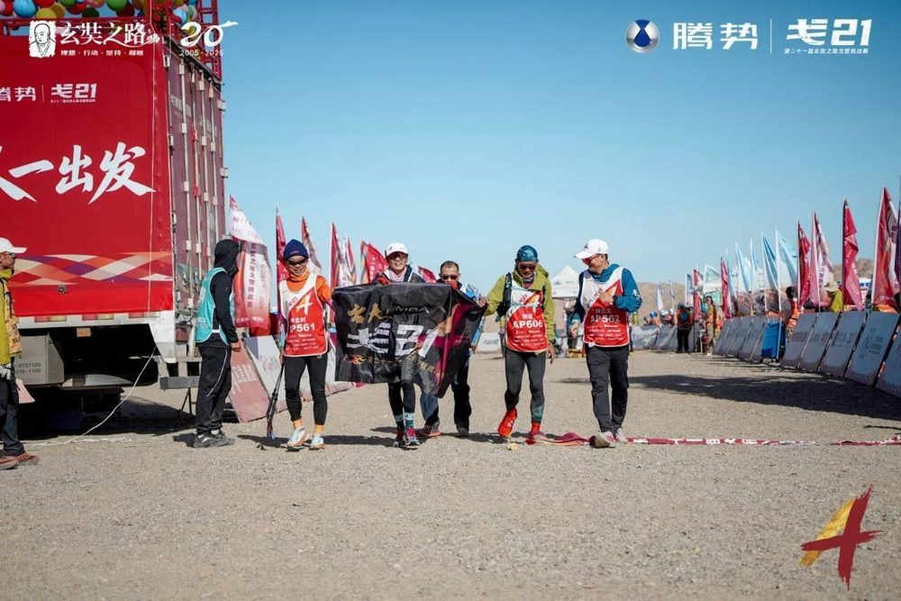
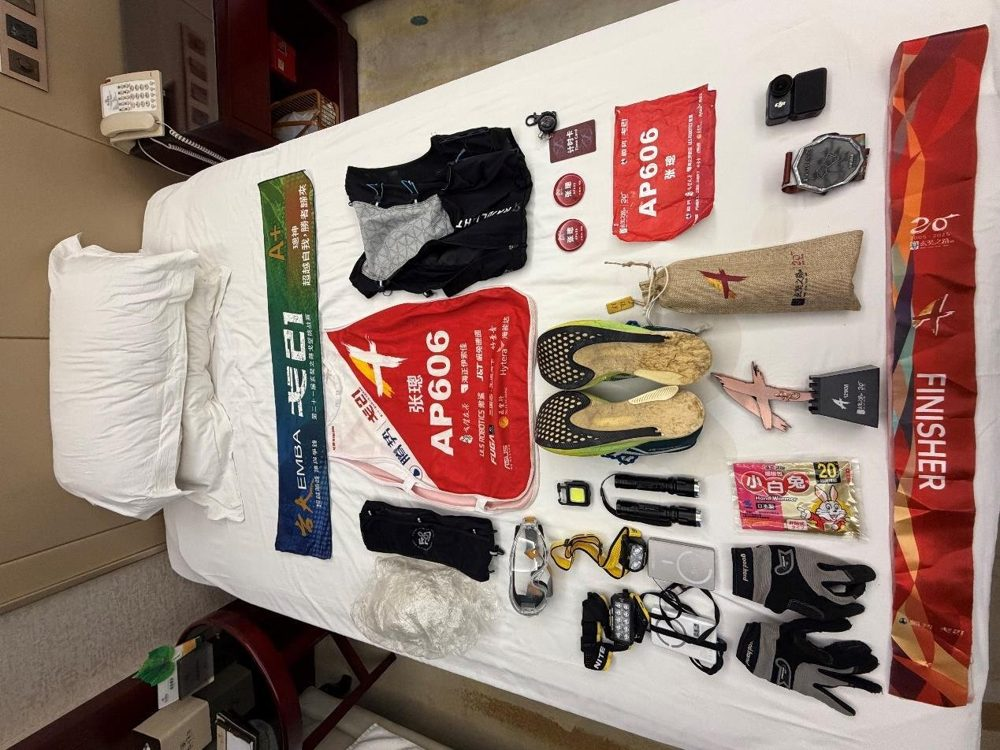

戈台大EMBA戈友會
給跑過 A、B 隊的戈友

 準備站
準備站
一天一夜、121 公里、自導航、自補給。我們再回一次戈壁：挑戰自己、享受賽道，也照顧身邊需要幫忙的人。
本頁依〈戈21 A+ 賽事章程〉（2026 年 4 月版）整理。標示 參考戈21 的日期與數字，戈22 可能調整，一切以戈22 正式章程為準。
準備站一天一夜、121 公里、自導航、自補給。我們再回一次戈壁：挑戰自己、享受賽道，也照顧身邊需要幫忙的人。
本頁依〈戈21 A+ 賽事章程〉（2026 年 4 月版）整理。標示 參考戈21 的日期與數字，戈22 可能調整，一切以戈22 正式章程為準。
「戈22A+共跑練習計劃」群組裡正在準備的戈友，依屆別排列。團隊獎門檻是實際出賽 10 人，我們的人數已經超過一倍。
先盤點證書、年齡與身體狀況，缺什麼現在補還來得及。
注意：跑過 A 或 B 隊不是報名條件本身。章程看的是越野賽完賽證書，或過去的 A+ 完賽證書。
從現在到終點的每個關卡。勾選紀錄只存在你自己的瀏覽器。
月份依戈21 的日程往後推一年估算；戈22 正式日期公布後再更新。
報到日統一檢查，起點與 CP 隨機抽查，全程隨身攜帶。
採購前對照規格，打包時再勾一次。
強裝只是最低要求。學長實際跑完後建議加帶的裝備，見 伍 學長經驗。
戈21 首次啟用「東歸之路」路線，起點由全體 B 隊歡送出發。
起終點、站點座標等賽道資訊戈21 是 7 月公布，戈22 的路線也要等公告。
10/3 08:00 出發，全體 B 隊歡送
學長實測：07:30 出發
取用自己的補給、換裝，建議換行動電源
學長實測：CP5 旱峽營，45.5K
寄存箱 2。多數人到這裡時已入夜；可繼續最後 41 公里，也可「鳴金收兵」
學長實測：CP9 黃谷驛，88.1K，剩 32.6K
10/4 14:00 關門，終點頒獎
學長實測：全程 120.7K
大會只給各 CP 座標，路線自己規劃，依序打卡。錯過打卡點要回頭補打。
打卡點只提供飲用水（看天氣提供熱水）。其餘靠自己背，或放在 40K、80K 寄存箱。
部分站點設有關門時間，沒在時間內出站就強制退賽。退賽者可拿到已完成賽段的成績證明。
退賽隊員一律搭撤站車回終點，不另外派車；不能繼續在賽道上前進，離開賽道要經大會確認。
| 獎牌 | 男子 | 女子 | 男子平均配速 |
|---|---|---|---|
| 金 | 16 小時內 | 17 小時內 | 7'56"/km 以內 |
| 銀 | 16–18 小時 | 17–19 小時 | 8'56"/km 以內 |
| 銅 | 18–30 小時 | 19–30 小時 | 14'53"/km 以內 |
配速以 121 公里換算，包含停站時間，僅供配速規劃參考。另設總排名、青年組（18–45 歲）、大師組（46–63 歲）的男女前三名。在 80K「鳴金收兵」者單獨排名，可獲專屬獎章與官方完賽證書，但不參加評獎。成績＝完賽時間＋罰時；中途搭乘交通工具、接受外部協助，成績都不列計。
同一院校或官方認證的戈友組織，A+ 實際出賽達 10 人以上就能拿到。戈21 台大 A+ 有 5 人；戈22 準備小組已有 22 位戈友，一起練到出賽，把團隊獎帶回台大。
璁哥（張璁，戈十九 A、戈21 A+）的 121 公里實戰筆記。
這是與自己的競賽，或磨練，或修心，或享受。
璁哥說，賽道不難、能力不難、裝備也不難，難的是老天會出什麼題目，永遠不知道。風沙、寒夜、小雨、迷路、受傷，只能一題一題化解，就像經營企業。助人也助己，這就是修心。
戈21 台灣 11 位 A+ 選手全數完賽，台大 5 人（林志文、張善順、林金財、王凌卿、張璁）最後一起跑進終點。這是台灣第一次全員安全完賽。

風沙、寒風，加上一路吃甜的補給、喝冷水，呼吸道會慢慢受損，自己卻渾然不覺。璁哥賽後在車上呼吸不順、心悸，喝了熱湯後一直吐黑痰，才發現問題出在這裡。正賽 A、B 隊時間短，可能不明顯；A+ 長達一天一夜，就會變成大問題。

每個人追求的目標不同，但彼此照顧的心意是連在一起的：裝備缺了有人借，賽道上有人氣喘有醫生戈友幫忙，夥伴賽前受傷就陪著用走的。台大 5 人依能力兩兩一組、互相照應，目標就是全員平安完賽。
摘自張璁〈戈21 A+ 投稿心得〉，經整理改寫。
退費分四段，越晚退扣越多。
包含賽事組織、計時裁判、賽道補給、營地保障、醫療救援、衛星定位、通訊安保、保險、文物管理費、獎牌證書、賽事交通、安全培訓。
不含：往返敦煌的機票、自己加保的意外險、裝備。
日期為戈21 版本。退費只退本金，一律以人民幣結算退回原匯款帳戶，匯差與手續費自行負擔，不計利息。
繼續是勇氣，收兵亦是智慧。每一種選擇，都是圓滿。